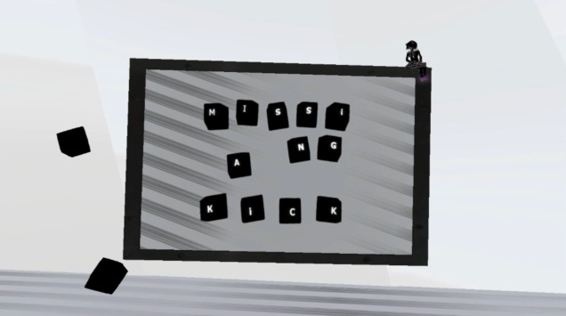

<div class="np-project-content">
  <h1>Missing a Kick
</h1>
  <CENTER></CENTER>
  <div class="np-project-info">
    <div class="np-project-sidebar">
      <div class="np-project-list">
	{% include missing-a-kick-info.html %}
      </div>
    </div>
    <div class="np-project-description">
      {% include missing-a-kick-desc.html %}
    </div>
  </div>
</div>
